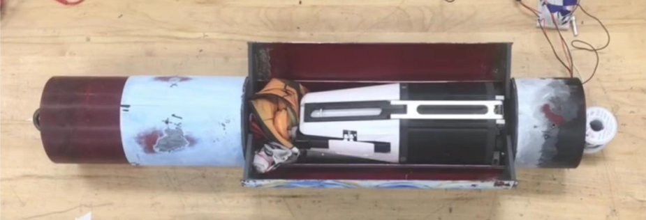
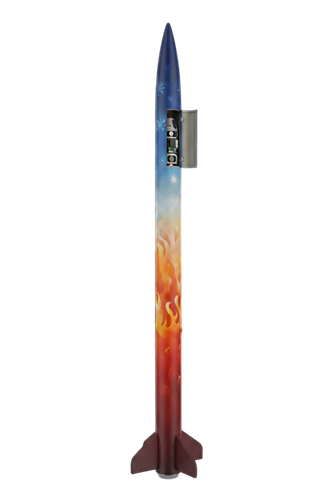
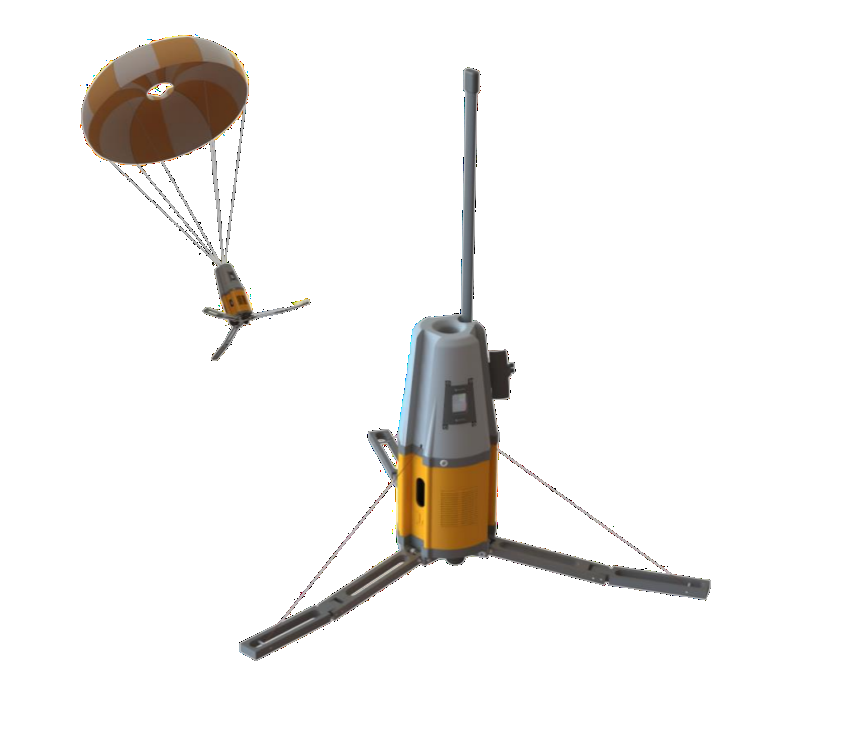

Drop It Like It’s Hot (Payload) for Project Navigator


finished rocket

payload
timeframe
Fall 2024 – Spring 2025
role
Payload Software Associate Lead
tools & methods
C++
I2C
SPI
results
Won the Apogee Award and placed 5th overall at the 2025 NASA USLI competition.
about
Payload collects data during rocket descent — max velocity, landing velocity, landing acceleration, max apogee, landing location, landing site temperature, and landing orientation
Kalman Filter for rocket state estimation
Multithreading for faster computing time
Retention system opens up the rocket airframe and drops the payload on radio command
Once the payload lands, the antenna pops up and starts transmitting the collected data to NASA over the 2M radio band